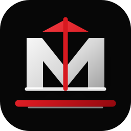
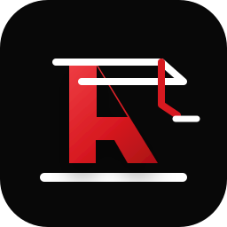
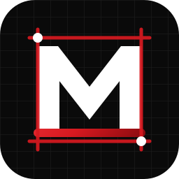
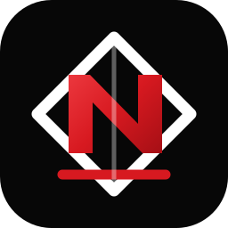

پی و سازه
مناسبترین گزینه برای تاکید روی عمران، استحکام و هویت حرفهای.
چهار مسیر پیشنهادی برای هویت بصری نوین پی تست البرز؛ گزینه اول روی سایت بهعنوان نسخه پیشنهادی فعال شده است.

مناسبترین گزینه برای تاکید روی عمران، استحکام و هویت حرفهای.

نمایشیتر، مناسب برندهایی که میخواهند حس پروژه و کارگاه پررنگ باشد.

مینیمالتر و مناسب تاکید روی طراحی، نقشه، کنترل و مستندسازی.

ساده، برندپذیر و خوب برای مهر، سربرگ، کارت و شبکههای اجتماعی.